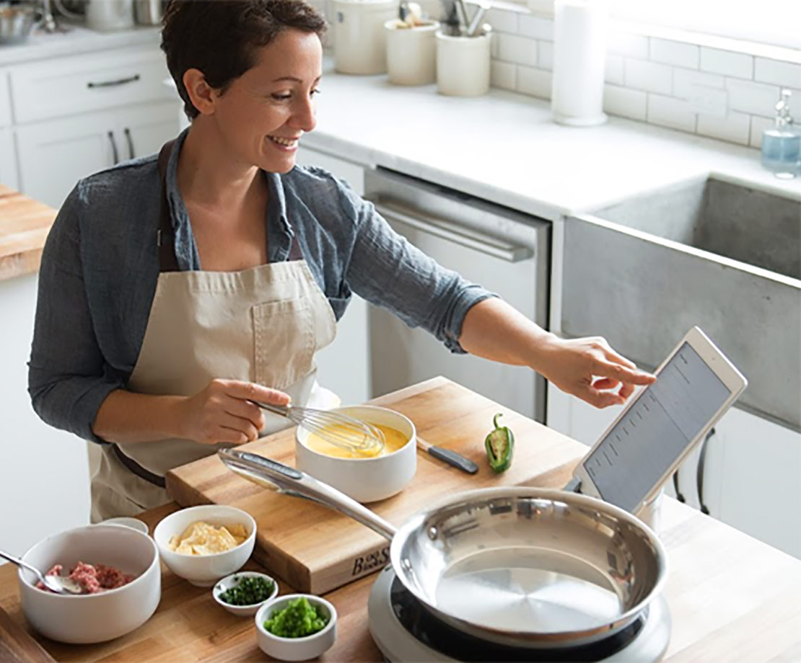
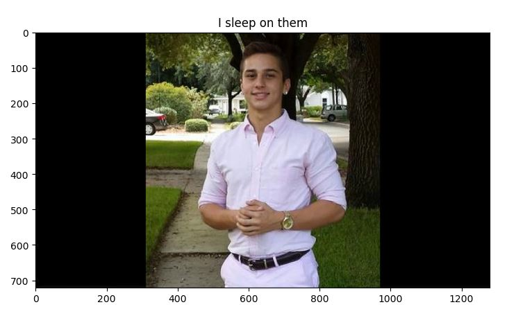
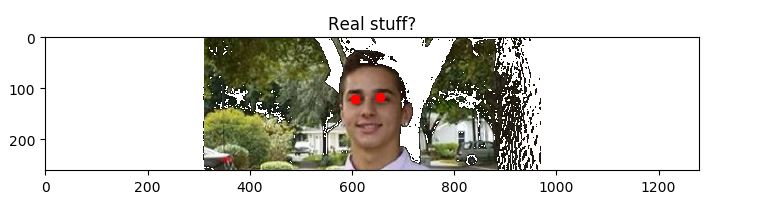
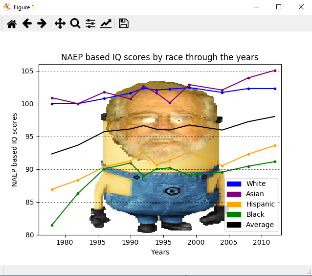
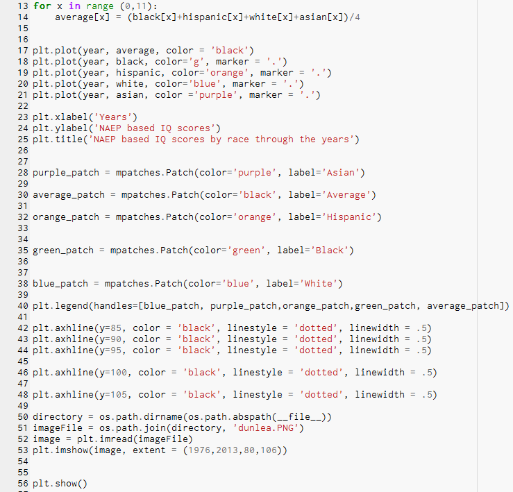
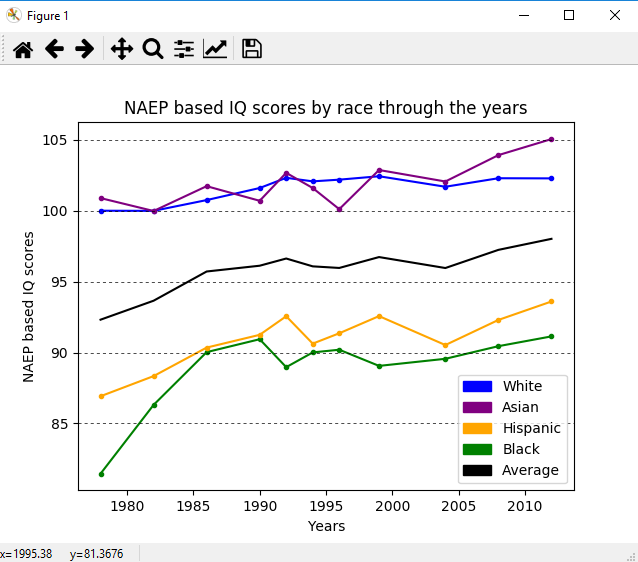
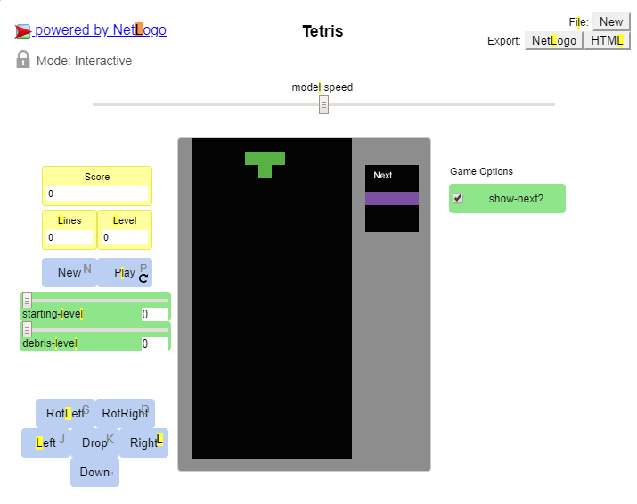
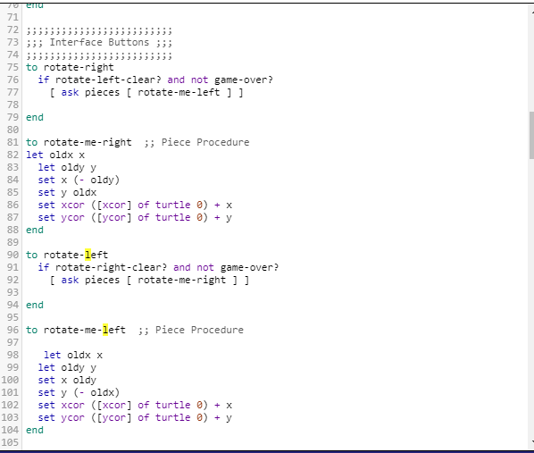

I haven't worked on too many things so far but check back later!

My first game on scratch!

Click here to download a Cooking Calculator App that I made!

To use the app you need to import the aia file into MITAppInventor and transfer it to an android device
Here is a link to a interactive fiction I created using python
The screen will be split into code on the left and the session (where the code is executed) on the right.
To start, click the button with the play sign and enter answers into the right side of the screen.

Click here to open a python file that can play Rock, Paper, Lizard, Spock.

This picture should help you understand how the game works if you don't already know.
This a picture edit I made using python. The first one is the original; second one is after several modification.
Click here to download the python code for this


This a GUI in created using python. The first one is he GUI base; the second one is after clicking on the interface multiple times. Each click creates multiple images at a certain spot. You can adjust the creation of the images with the sliders.
Click here to download the python code for this


In this project we wanted to answer a question by analyzing data. This is a program written in python that displays a set of data through a graph. It covers trends in IQ by race through selected years.
Click here to download the python code for this


Here is the graph without Dunlea

In this project we wanted to modify some NetLogo code and answer the question as to how people will react to changes in their understanding. In this simple modification, I made it so that the rotate right button actually rotates left and vice versa. I also made it so that trying to move left will move you right. It's a brain teaser. In some trials I conducted, the average time for the completion of one row increased from 1 minute and 7 seconds to 2 minutes and 10 seconds.

